∞
往期
Archive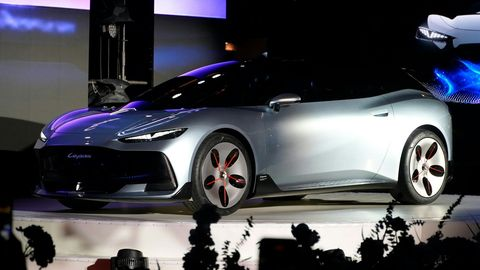
Aura：Lepas 首款全球概念車，豹眼頭燈配發光格柵螢幕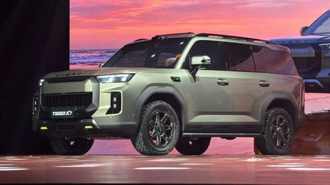
Tiggo X7：Tiggo X 越野線首作，方正車身配拖車鉤造型飾件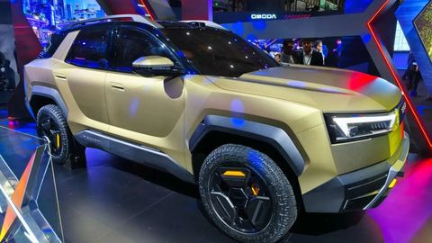
Omoda X 全球首發：機甲風「Crossvolution」越野跨界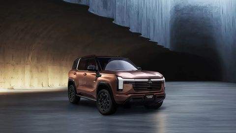
全新 Pajero 泰國開賣：T 字頭燈、防滾架 C 柱的新旗艦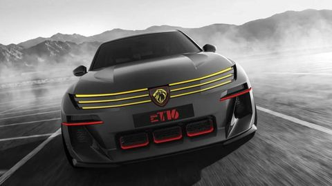
E-T16 概念車：205 T16 化身純電掀背，預告下一代 E-208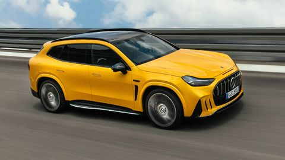
GT SUV：AMG 首款自研全尺寸 SUV，星形日行燈與主動空力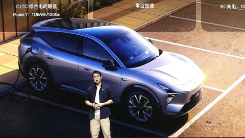
MONA L05：前 Ferrari 外型主管操刀的大五座 SUV，10/29 上市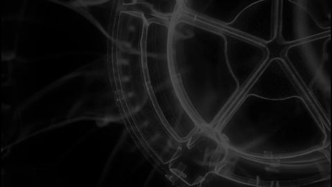
Mission S：中置超跑平台站上 911 之上，紐約碼頭世界首發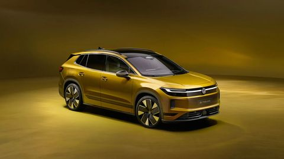
ID. Tiguan：Pure Positive 做成真 SUV，「水族館」橫燈條取代軟跨界臉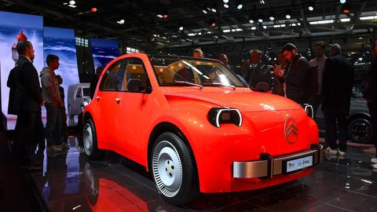
2 CV Concept：3.76 米、目標 1.5 萬歐元，把「鐵皮蝸牛」做成電動國民車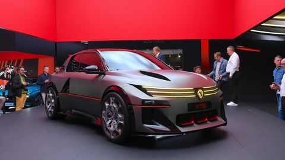
E-T16 Concept：205 T16 拉力魂重生，三爪燈改成橫向，預告下一代 E-208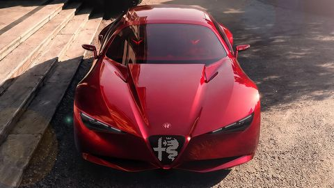
Cuorerosso 正式亮相：一體雕塑、Coda tronca 截尾，Cx 0.28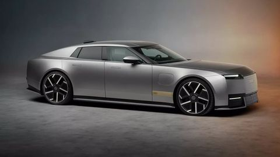
Type 01：5.2 米長、1.4 米矮，用「貫穿線」重做捷豹的臉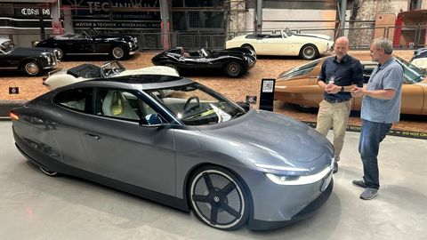
Mission Efficiency：Cd 0.158 的流線型，卻能塞超過 1,200 升行李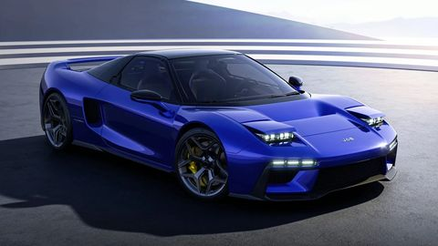
JAS Tensei 正式亮相：Pininfarina 讓初代 NSX「轉生」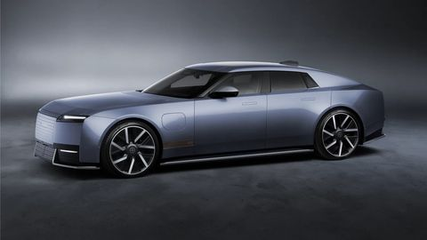
Jaguar Type 01 正式發表：品牌重生後的第一台車
沒有符合條件的期數。